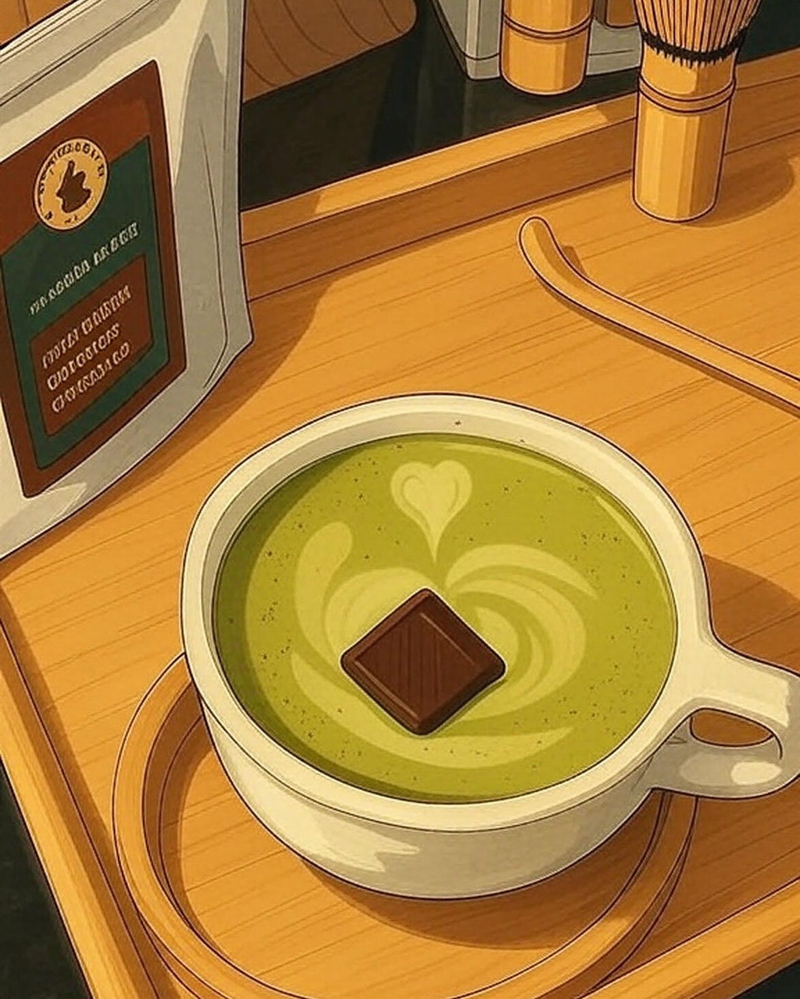
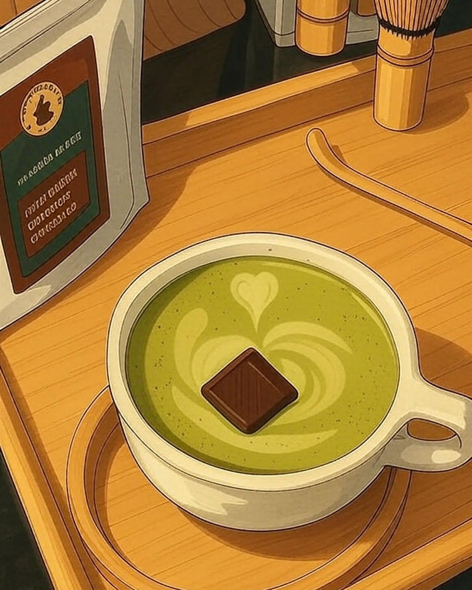

parnia@dev: ~/home
About
･ﾟ✧ · 𐙚 ̊🍋🟩♪ · ✮ 🌿:𓏲
Hi, I’m Parnia Yazdinia!
I study Software Engineering and love blending technical problems with a creative eye. Recently I’ve been exploring hardware + Python automation, building small tools, and polishing UIs.
In my free time I like to go to cafés, film photos, hang out with friends, and read poets.
 

if you’re reading this, you now share my current vibe 🌙☕